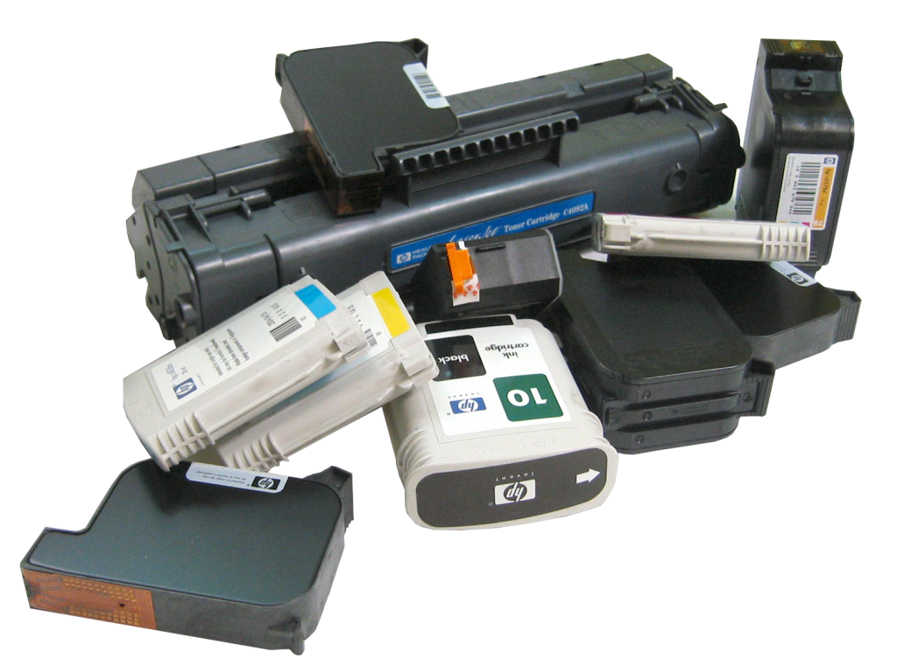
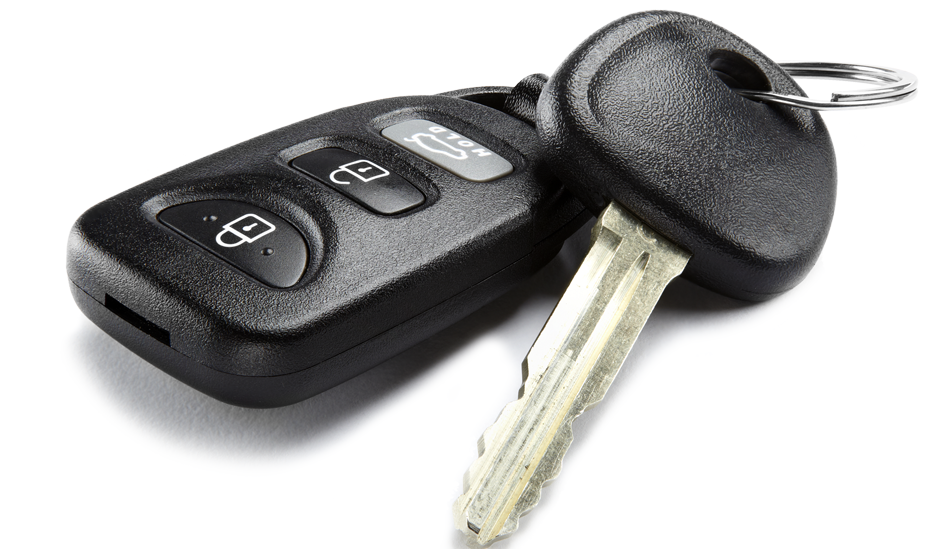

Учитывая пожелания клиентов и сложность процесса мы постоянно упрощали процесс оказания услуги.
С годами удалось достигнуть оптимального сервиса и цен, которые придутся вам по вкусу.
Чтобы добиться от картриджа качественной печати, его заправка производится качественными расходными материалами - Static Control. * - Условия акции по tel. +38(099)106-23-15
Каждая 6 заправка бесплатно.
РЕМОНТ ПЛАНШЕТОВ
Имея не очень большой размер, в планшет заложен великолепный потенциал и довольно внушительные характеристики!
С помощью этих удобных устройств пользователь может решать большую часть насущных задач!
Как всегда, основная часть обращений в наш сервисный центр, по ремонту планшетов, связана с
механическим повреждением экрана, сенсора.
замена разьема зарядки.
В нашем сервис центре выполняется качественный и профессиональный ремонт планшетов,
ремонт телефонов и других мобильных устройств.
Вы можете принести сломанный планшет в наш сервис центр по адресу - указанному ниже.
РЕМОНТ БРЕЛКОВ

Причин выхода из строя брелков огромное количество.
Здесь все зависит от модели сигнализации и сложности схемы построения ее элементов.
Если вам потребовался ремонт брелков сигнализации, то не следует пытаться выполнить все самостоятельно.
Современная автомобильная сигнализация – это довольно сложная система, разобраться в
которой без определенного уровня подготовки просто нереально.
Профессионалы без труда могут выполнить ремонт брелков.